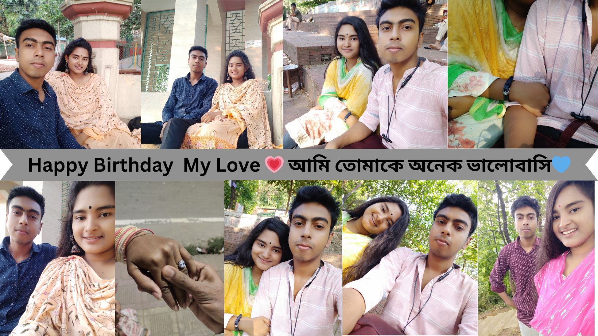

আমার রসগোল্লা 😘 ,
তোমাকে আমি অনেক ভালবাসি তুমি আমার জীবনে শুরু তুমি আমার জীবনের শেষ, তোমাকে আমি অনেক বেশি ভালোবাসি আজকে তোমার জন্মদিন। তুমি যদি জন্ম না নিতে তাহলে আমার জীবনে আসতে না তাই আমি মহান সৃষ্টিকর্তার কাছে কৃতজ্ঞ যে আজকে দিনে তোমার জন্ম হয়েছে এবং তুমি আমার হয়েছো। এভাবে চিরজীবন আমার পাশে থাকো আমি তোমার সাথে কাটাতে চাই হাজারো মাস। অনেক বেশি ভালোবাসি প্রিয়। হাজার হাজার লাল গোলাপ আর D**** এর শুভেচ্ছা শুভ জন্মদিন। ইতি তোমার পেঁচা
"প্রিয়া [Future Wife😘],
জন্মদিনের অভিনন্দন! তোমার জন্মদিন সাধারণ একটি দিন নয়, একটি উজ্জ্বল উপলক্ষ্য যে আমি অসীম আনন্দিত। আমি স্বপ্নের মতো খুশি যে আমি তোমার জীবনের একটি মূল্যবান অংশ হতে পেরেছি। তুমি একজন অত্যন্ত স্বাভাবিক এবং তোমার উপস্থিতিকে আমি সর্বদা অনুসরণ করি। আমার প্রেম এবং শুভেচ্ছা তোমার জন্মদিনের এই স্পেশাল দিনে তোমার সঙ্গে রয়েছে। আশা করি তোমার জন্মদিন শুভ হোক এবং তুমি সব সময় আনন্দে ও সুখে ভরে থাকো। তোমার সম্মানিত ভবিষ্যত জীবনের সবচেয়ে ভালো অংশগুলি হোক। শুভেচ্ছা ও ভালোবাসা সহ, [প্রিতম]"
"প্রিয় [আমার সবকিছু],
জন্মদিনের অভিনন্দন! এই দিনটি আমার জীবনে তোমার ২য় জন্মদিন যা আমি সবসময় মনে রাখব। আমি অত্যন্ত সুখিত যে আমি তোমার জীবনের একটি অংশ হতে পারছি এবং তোমার সঙ্গে যাত্রা করতে পারছি। তুমি আমার জন্য একটি অমূল্য উপহার, এবং তোমার প্রতি আমার অসীম ভালোবাসা রয়েছে। আমরা একসাথে সময় কাটাতে শুরু করেছি এবং সব সময় একে অপরকে সমর্থন করছি। তোমার প্রতি আমার প্রতি ভালোবাসা এবং সম্মান সবসময় রয়েছে। আশা করি তোমার জন্মদিন একটি অসাধারণ এবং সুখময় দিন হয়। তুমি সব সময় আনন্দে ও খুশিতে ভরে থাকো। শুভেচ্ছা ও ভালোবাসা সহ, [পেঙ্গুইন]"
"প্রিয়া [সুপ্রীতির মা],
জন্মদিনের অভিনন্দন! আজকের দিনটি তোমার জন্য একটি বিশেষ উপলক্ষ্য। আমি সবসময় ভাবতে পারি যে আমি ভবিষ্যতে তোমার প্রতি বিশেষ ভালোবাসা এবং সম্মান ধরব। তুমি একজন সহজ, স্বাভাবিক এবং মহিষ্মতী মহিলা, এবং তোমার সঙ্গে যাত্রা করতে আমি অত্যন্ত খুশি। তোমার সমস্ত স্বপ্ন ও লক্ষ্য সত্যি হয়ে উঠুক তার জন্য আমি অপেক্ষায় আছি সাথে তোমার হাতের রান্না লিস্ট করে রাখছি । তোমার জন্মদিনে আমি শুভেচ্ছা জানাতে পারতে খুশি এবং আমি আশা করি যে তুমি এই দিনটি পূর্ণতঃ উপভোগ করবে। তোমার ভবিষ্যত জীবন সবসময় সুখে, আনন্দে ও ফলস্বরূপ থাকুক। শুভেচ্ছা ও ভালোবাসার সহ, [তোমার পেঁচা]"
"প্রিয় জান 💗
জন্মদিনের এই সময়ে তোমাকে অসীম শুভেচ্ছা ও ভালোবাসা। তুমি আমার জীবনের সবচেয়ে মূল্যবান সম্পত্তি, এবং তোমার প্রতি আমার অসীম ভালোবাসা রয়েছে। তোমার উজ্জ্বল মুখের প্রতিটি হাসি আমার হৃদয়ে সুখ এনে দেয়। তুমি সবসময় আমার জন্য একটি অদ্ভুত অস্তিত্ব হিসেবে আছো, এবং আমি তোমাকে প্রতিদিন প্রশংসা করি তোমার সমস্ত গুণের জন্য। তোমার জন্মদিনে আমি আশা করি যে তুমি সব সময় সুখে ও আনন্দে ভরে থাকো। তোমার সাথে হৃদয়পূর্বক আমার শুভেচ্ছা ও ভালোবাসা রয়েছে। ভালো থাকো সবসময় 😘😘, [ইতি ইঁদুর]"
জন্মদিনের শুভেচ্ছা পিচ্চি
তোমার জন্মদিন এমন একটি দিন যা আমি সব সময় অস্বাভাবিক অপেক্ষা করি। তুমি আমার জীবনের সর্বোত্তম অংশ এবং আমি তোমার সঙ্গে থাকতে পেরে অত্যন্ত ধন্য। তুমি যেমন আমার জীবনের সেরা সঙ্গী, তেমনি সবচেয়ে মিষ্টি মায়া । আমি চাই তুমি সবসময় হাসিখুশি থাকো এবং আমার পাশে থাকো। জন্মদিনের আন্তরিক শুভেচ্ছা ও ভালোবাসা রইল 💗
ইতি পিচ্চি ।
জন্মদিনের শুভেচ্ছা, টুনটুনি!
আমি সব সময় তোমার হাসির জন্য প্রার্থী এবং তোমার পাশে থাকার জন্য সবসময় সমর্থ ,তুমি যেমন সবচেয়ে মিষ্টি, তেমনি সবচেয়ে স্পেশাল আমার কাছে ।তুমি যেমন আমার জীবনের সবচেয়ে মূল্যবান অংশ তেমনি আমার জীবনের সবচেয়ে মানের উপহার । আমি তোমাকে ভালোবাসি অসীমভাবে 💗।

আমার কাছের মানুষ
প্রিয় আজকে সেই দিন যে দিনের জন্য আমি দীর্ঘ এক বছর অপেক্ষা করে থাকি কখন আসবে এই দিন আর আমি তোমাকে জন্মদিনের শুভেচ্ছা জানাতে পারব আমি চাই প্রতিটি বছর সর্বপ্রথম তোমাকে জন্মদিনের শুভেচ্ছা জানাবো দীর্ঘ এক বছর অপেক্ষা করার পর আজকে সেই দিন তোমার জন্মদিন প্রিয় 🎂শুভ জন্মদিন🎂
Some incidents and misunderstandings in our relationship

শুভ জন্মদিন Cuddle Bug 💗
আমার ভালোবাসা এবং প্রিয়তমা,
আমি জানি তুমি আমাকে আশ্বাস দিতে চাও, তাই এই চিঠিটি লিখছি। আমি তোমাকে অনেক ভালোবাসি, এটা আমার জীবনের একটি অসীম অংশ। তুমি আমার জন্য এত গুরুত্বপূর্ণ, আমার প্রতিটি দিন তোমার উপস্থিতি আমাকে আনন্দ দেয়। তোমার সঙ্গে সময় কাটানো আমার জন্য একটি অমূর্ত অভিজ্ঞতা।আমার জীবনে সবচেয়ে শুভ অভিজ্ঞতা গুলোর মধ্যে একটি হলো তোমার সঙ্গে সময় কাটানো। তুমি আমাকে সাহায্য করেছে, আমাকে সমর্থন দেয়েছে, এবং অপরিসীম প্রেম দিয়েছে। তোমার উপস্থিতি ছাড়া আমার জীবন অসম্পূর্ণ।আমি তোমার সাথে যখন কথা বলা শুরু করেছি তখন থেকে তোমার কথা ব্যবহার আমার ভালো লাগতো কিন্তু এই ভালো লাগা থেকে আমি তোমাকে ভালোবাসি বলে ফেলেছি কিন্তু আমি প্রতিদিন তোমাকে বলতাম কখনো উত্তর পেতাম না তাও আমি বলতাম অবশেষে ৬ মাস পর অবশেষে আমি তোমার থেকে উত্তর পেয়েছি 🙂 আমি এই ৬ মাস তোমাকে অনেক করে বোঝানোর চেষ্টা করছি কিন্তু পারি নি ভাগ্য খারাপ আমার 🙂 তখন অনেক খারাপ লেগেছে 🙂 কিন্তু এখন আর খারাপ লাগা টা নেই কারণ তোমাকে আমি আমার করে পেয়েছি 🥰 আমি তোমাকে অনেক অনেক অনেক বেশি ভালোবাসি ❤❤❤ কিন্তু আমার সাথে তোমার একটু বেশি ঝগড়া, রাগ , অভিমান হয় ☺ আমি চেষ্টা করি নিজের রাগ কমিয়ে রাখার জন্য ☺ কিন্তু তাও মাঝে মধ্যের রাগের মাঝে অনেক কিছু বলে ফেলি তারজন্য আমি সরি 🥰 আমি তোমাকে শাসন করি অথবা বকা দি যায় মনে করো আমি তোমার ক্ষতি চাই না 🙂 তোমাকে অন্য ছেলের সাথে কথা বলতে দি না তাদের সাথে ছবি তুলতে দি না এটা এক প্রকার তোমার স্বাধীনতা নষ্ট করে দিচ্চি তার জন্য সরি কারণ আমার অনেক খারাপ লাগে অথবা জেলাস ফিল হয় যায় মনে করো আমার অনেক কষ্ট হয় তাই আমি মানা করি 😞 তোমাকে মাক্স পড়তে বলি + বাইরের কিছু খেতে মানা করি আমি জানি তোমার এতে অনেক রাগ হয় কিন্তু আমি শুধু মাত্র বলি পরিস্থিতির কারণে এখনকার মানুষ মোটেও ভালো না 👨🦱 আমি একটা ছেলে হয়ে জানি আরেকটা ছেলে কেমন হতে পারে 🙂 আমি চাই তুমি সবসময় হাসিখুশি সুন্দর ভাবে থাকে 💕 আমি তোমার কাছ থেকে কিছু চাই নাই আমার তোমাকে নিয়ে একটা স্বপ্ন সেটাই আমি চাই তুমি পূরণ করো 💕 মা বাবা ভাইইয়ের প্রতিটি ইচ্ছে পূরণ করো 💕 আর আমার আবদার টা পূরণ করবে -- তোমার হাতের রান্না করে খাওয়াবে ( আইটেম আমি বলবো)😋 ঠিক আছে । আর তুমি মন দিয়ে পড়ো শুধু এটাই চাই তোমার থেকে 💟 আমার তোমাকে নিয়ে অনেক চিন্তা হয় কেন তা জানি না আমি তোমাকে হারানোর ভয় পায় প্রতিটা সময় 😞 আমি তোমার উপর রাগ করি না আমার চিন্তা হয় তুমি হঠাত করে চলে গেলে আমি সারারাত ওয়েট করি তুমি কল দিবে বলে আমার তখন কেমন লাগে আমি বলে বোঝাতে পারবো না থাক আমার জায়গায় তুমি থাকলে হইতো বুঝতে 🙂 থাক তাও আমি চাই আমার সাথে কথা না বললে তুমি সুস্থ থাকো সবসময় এটাই চাই এটাই কামনা করি ভগবানের কাছে 💖
আমার অনেক বকবক শুনো সারাদিন অনেক বকবক করি তোমার সাথে আসলে সত্যি বলতে তোমার সাথে কথা না বললে আমার ভালো লাগে না এটা ঠিক রাগ করলে তোমার সাথে কথা বলা কমিয়ে দি কিন্তু আমার সারাদিন মাথার মধ্যের তোমার চিন্তা ঘূরে 😊
যায় হোক কখনো যদি ভালো ছেলে পাও সবদিক থেকে বেটার আমাকে বলিও আমি আর তোমাকে ডিস্টাব করবো না আমি চাই তুমি সবসময় সুখে এবং হাসিখুশি থাকো 🥰
এইবার জন্মদিন টা তোমার ভালো কাটুক আজ জগন্নাথের স্নান যাত্রা আজকে এই দিনে তোমাকে যান্ত্রিক ভাবে জানালাম
""""""" শুভ জন্মদিন আমার একটা মাত্র রসগোল্লা 🎂 """"""''
অনেক বেশি ভালোবাসি আমি তোমাকে 🌹❤